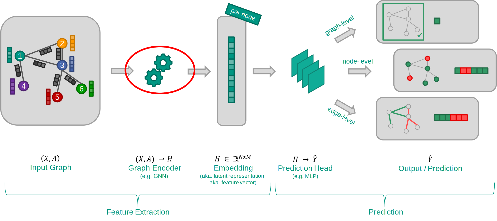
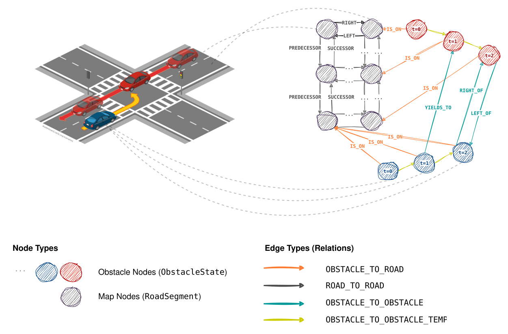
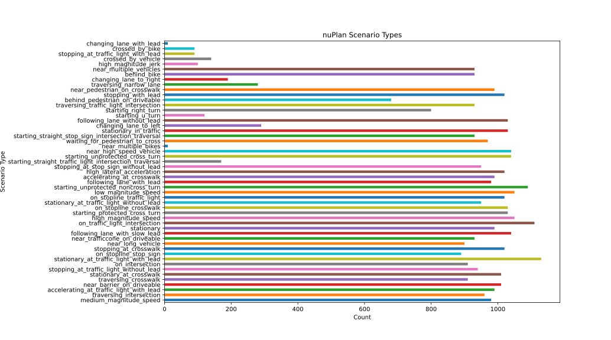
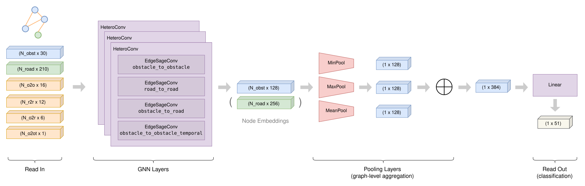

GNNs 101
Neural networks (NNs), in various flavors, have become the de-facto standard in pretty much every subfield of machine learning nowadays. They are being used on structured data like tables and time-series, raster data like images and sequential data like natural language sentences. More recently, graph neural networks have emerged in addition, in order to apply established deep learning techniques to graph-structured data as well. Graphs are a super flexible and universally applicable data model, that can be used anywhere from biology / chemistry to medicine, social networks analysis, recommender systems and static code analysis to energy grids or autonomous driving. In my research, I apply GNNs for clustering and generating traffic scenarios, but more on that later… I might do a separate blog posts only on the fundamentals of how GNNs work, but for now, let’s only stick to the very basics.
Graphs consist of nodes and edges, where edges interconnect between nodes in a directed or undirected fashion. Nodes will usually be accompanied by a feature vector composed of various attributes about the node (e.g. the position and velocity of a car or pedestrian on the road). Optionally, edges can have attributes as well. Heterogeneous graphs are a special type of graphs, namely such that consist of different types of nodes, likely having different sorts of attributes. Besides, spatio-temporal graphs are such that feature a temporal domain in some sense, usually either encoded via temporal aggregation / temporal unrolling or sequentially in form of a dynamic graph [4].
Most graph neural networks are based on the message passing scheme, where feature information is being propagated between interconnected nodes along their edges in an iterative fashion. The core part of GNNs are the graph convolution layers, the job of which is to aggregate and combine node features in a sensible way, that is, to generate node embeddings. The inner workings of these layers can be broken down into three separate components: a message function, an aggregation operator and an update function. These convolution layers are primarily used for feature extraction. Depending on the type of learning task (there are node-level-, link-level- and graph-level tasks), those layers are followed by some sort of aggregation- or pooling layer. Finally, in the readout stage, classical neural network layers (usually simple linear layers) are used to map from the embeddings to the final prediction (e.g. a class).
 Fig. 1: GNN Learning Pipeline © 2024, Karlsruhe Institute of TechnologyTraffic Scenarios as Graphs
Modeling Considerations
In my research, I concern myself a lot with traffic scenarios. A scenario can be viewed as a sequence of scenes, which, in turn, can be modeled considering different types of information. Often times, a 6-layer model [1] is considered to distinguish between information about:
- the road network,
- traffic infrastructure (signs, trees, …),
- temporary modifications (constructions, …),
- dynamic objects (cars, pedestrians, cyclists, …),
- the environment (weather, time of day, …) and
- digital information (traffic light state, V2X information, …).
Moreover, another taxonomy distinguishes scenario descriptions into (1) functional, (2) logical and (3) concrete, based on the level of detail [2].
When coming up with a suitable traffic scenario model, there are a couple of design decisions to be made, including:
- What information to consider (see above)
- What data representation to choose
- Graph-based
- Vector-based (maps only)
- Rasterized (2D image)
- Object lists (agent states only)
- Logical (e.g. OpenDRIVE, OpenSCENARIO)
- Ontology-based ([3])
- Scene- or agent-centric representation
- How to represent time dimension
A commonly seen pattern is also to use separate encodings for maps and agent state, e.g. VectorNet [5], LaneGCN [6] or some custom CNN (cf. [7]) as an upstream map encoder, followed by a sequence model [7] or transformer [8] for the dynamic state.
Heterogeneous Traffic Scenario Graph Model
For my research, I decided to opt for a representation in which traffic scenarios are encoded entirely as a single graph, including map topology / road geometry, traffic agents and the temporal dimension. It’s heavily inspired by the graph models presented in [9] and [10], but varies in some aspects. I’m using a graph that is heterogeneous (map- and agent / obstacle nodes), directed and spatio-temporal (using temporal unrolling [4]), yet static (single graph).
 Fig. 2: Traffic scenario graph representation schema ()Another option that I considered initially was to use the Semantic Scene Graph proposed by [11], then stack multiple scenes to extend it to scenarios and eventually feed these through a sequence model to obtain a global (latent) representation. However, I discarded the idea again in favor of that one single, comprehensive data model for entire scenarios.
Obstacle nodes are used to encode both static obstacles like road infrastructure and dynamic obstacles, primarily traffic participants. RoadSegment nodes represent the map, broken down into lanelets, that is, short segments of driving lanes, walkways, intersections, etc. Nodes are connected by edges of four different types:
ObstacleToObstacle:Semantic relations between two actors, e.g. “car A follows car B” or “car A gives way to cyclist B”.RoadToRoad:Map topology and -hierarchy, e.g. “lane 1 is right of lane 2”.ObstacleToRoad:Association between actors and their current positions on the map, e.g. “car A is driving on lane B”.ObstacleToObstacleTemporal:Modeling the temporal dimension of dynamic actors
Obstacles include attributes about their individual properties (type, dimensions, …) and their current state (position, velocity, orientation, …). Road segments are represented by their centerline and according widths, sampled at discrete steps (k=100). Inspired by [12] and [13], all positions are relative to the mean positions of all agents at t=0. Also, for every scenario, the map is cropped to the scenario’s maximum extent, plus a buffer of 100 meters.
In addition, edge attributes are employed as well. Specifically, every edge encodes relative information about the interconnected nodes, e.g. the relative velocities between obstacle or an obstacle’s displacement relative to a lane’s centerline. Only the temporal edges do not contain any feature information. Instead, the chronological ordering of obstacle states is modeled implicitly by the presence or absence of temporal edges between node pairs. Note that while fig. 3 lists timestep as an attribute of the Obstacle class (implemented as actual Python classes), the attribute is dropped later when constructing actual node feature vectors. No explicit timestep information ends up in the final graph, however, optional positional encoding is added (see below).
Every node’s and every edge’s features are eventually flattened into fixed-size feature vectors. For example, an obstacle node’s feature vector is of size 30, including two components for x- and y position, longitudinal and lateral velocity, a one-hot-encoded type attribute, etc. Road segment feature vectors are larger (210 components in total), primarily because they are sampled equidistant at 100 (x, y) points (note: other than shown in fig. 3, only a lane’s entry- and exit widths are kept for the final feature vector).
Temporal Kernel Size
For the temporal edges, I additionally came up with the concept of “temporal kernel size” to ultimately facilitate GNN learning. The idea is to not only connect obstacle states from t -> t+1, but add edges for up to k steps into the future. While this doesn’t add any information into the data model itself, it sort of artificially extends the receptive field of nodes along temporal edges. The intuition behind this is that a network can incorporate information from more states in a single convolution operation.
Scaling and Positional Encoding
Since the attributes are from vastly different domains and defined in different value ranges, min-max-scaling (using Scikit-Learn’s MinMaxScaler) is applied as a preprocessing step to every feature vector, resulting in attributed normalized to [0, 1].
Moreover, optional positional encoding can be added to the obstacle state feature vectors to encode their temporal ordering. I decided to apply standard sinusoidal encoding, where x is the respective scene’s timestamp normalized to [0, T]. Following the original paper, the encoding is simply added to the original feature via summation.
Scenario Graph Classification
Problem Description
As a simple graph-level learning task, I decided to build a network to classify traffic scenarios using the nuPlan dataset. Goal is to be able to feed a scenario encoded in the above graph format into the classification network and predict the category (out of 74) it most likely belongs to. The fact that these classes are (a) distributed very unevenly (see below) and (b) can be inferred trivially in a purely analytical way for the most parts makes the learning problem a lot less spectacular. Also, there is no actually sensible real-world use case for this type of classifier. However, I still wanted to build a fully-fledged GNN-based classifier to gain some more practice and to put my above data model to the test.
From a machine learning perspective, the problem essentially boils down to representation learning (obtaining descriptive latent graph embeddings), followed by simple multi-class classification.
nuPlan Dataset
NuPlan consists of more than 100,000 scenarios (> 500 hours of driving) of varying duration recorded in four different locations, featuring traffic agent- and ego trajectories as well as - for some parts - raw camera- and lidar sensor readings. The dataset is primarily meant to be used for trajectory prediction and traffic simulation in the context of the nuPlan competition. However, it also comes with simple labels per scenario. Every scenario is categorized into one of 51 different classes (for the Boston train dataset I used - in total nuPlan has 74 classes) using an auto-labelling process based on simple heuristics. Particular classes are, for example:
high_magnitude_speedlow_magnitude_speedon_stopline_traffic_lightaccelerating_at_crosswalkchanging_lanetraversing_narrow_lane- …
… and many more. As can be seen, every class corresponds roughly to a simple traffic maneuver, which is what I aim to predict.
 Fig. 4: Resampled nuPlan Scenario Type Distribution ("train_boston" split)Classes
By default, classes are distributed very unevenly. The large majority of scenarios are of type stationary and a few others, so a classification model is likely to overfit to simply predict one of these classes and still achieve decent performance. There are several ways to account for class imbalances, one of which is to use a weighted loss, that is, to assign higher importance to errors made on the minority class (e.g. see CrossEntropyLoss). Another method is weighted sampling, i.e. to physically oversample the minority- or undersample the majority class during mini-batching or a combination of both.
Luckily, as nuPlan has way more data samples than I planned to train on for this task, I could simply draw actually unique samples in a way that yields a more or less uniform distribution with some exemptions (see fig. 4). Some classes are still heavily underrepresented, for which I could additionally apply oversampling (draw with replacement) as described above, but I decided to ignore that for now.
Maps
Maps come as GeoPackage (.gpkg) files containing various different vector- and raster layers, each with their own properties and semantics.
Network Architecture
The classification model’s architecture that I developed is very simple and straightforward and essentially involves a GNN-based feature extraction stage followed by a classification head.
 Fig. 6: GNN-based graph classification model architectureFirst, the heterogeneous graph (obstacle- and road segment nodes interconnected by four different types of attributed edges) is fed into a series of three consecutive message passing layers, effectively yielding a receptive field of 3 hops. Hidden embedding dimensions are chosen as 32, 64 and 128 for obstacles and 64, 128 and 256 for road segments. Batch normalization is applied before every convolution layer. Edge features are considered as part of inter-obstacle message passing, but are not being updated themselves. A modified variant of PyG’s SAGEConv layer is used, which additionally supports edge features. It does so by passing them through a single linear layer to project them to the according source node’s feature dimensionality and subsequently adding them onto that node feature vector.
1 | class EdgeSAGEConv(SAGEConv): |
Listing 1: Modified variant of SAGEConv to consider edge attributes
As a second step, the transformed obstacle node embeddings are fed through three parallel pooling layers (min-, max- and mean pooling) and subsequent concatenation to obtain a graph embedding. Edge features are not used any further after the initial message passing layers.
Lastly, this graph embedding is passed through a single linear layer to obtain the logits that correspond to the predicted scenario type class probabilities.
Implementation Details
The nuplan-devkit is used to read map information and actual scenarios from nuPlan into Python classes to benefit from an object-oriented programming style through the code base. A to_graph() method is implemented to map the scenarios to NetworkX DiGraphs as an intermediate representation (to perform additional graph analyses, etc.) before, eventually, another converter yields PyG HeteroData objects from them, including vectorized feature representations.
The entire ML-model is implemented using the excellent PyTorch Geometric framework and all data handling in this context is implemented in a Dataset object with additional support for in-memory caching.
Listing 2 shows an excerpt from my implementation of the scenario dataset, depicting its constructor signature and relevant method stubs. In addition, listing 3 shows an excerpt from the actual model definition, specifically the parts where convolution-, pooling- and classification layers are defined.
1 | class NuplanDataset(Dataset): |
Listing 2: Nuplan scenario graph dataset implementation
1 | class DeeptestSimpleGNN(torch.nn.Module): |
Listing 3: Scenario classification model definition
Experiments
For my experiments, 10,122 scenarios from nuPlans train_boston data split were extracted in order to classify them. They were split into train, test and validation with a ratio of 70 : 15 : 15. In addition, I extracted individual scenes (that is, “snapshots” of scenarios, i.e. scenarios with only one timestep) to perform classification on as well. However, I’ll exclude these in the following and only focus on full scenarios.
Training the model proposed above, including all tweaks such as scaling, positional encoding and edge attributes, for 150 episodes results in a classification accuracy of 56.1 %. While this is certainly not a spectacular result, I’d still call it a success, considering that apriori probability is ~ 2 % and that we didn’t do any sort of hyperparameter tuning so far. The training process is depicted in fig 7.

Similarity Clustering
As I’m particular interested in graph similarity learning for traffic scenarios for a later project (stay tuned!), I was curious to see how well our classification model has already learned to model (dis-)similarity between graphs. To gain some first insights, I decided to visualize the model’s embedding space (output of the second-last layer, right before the final linear layer) in 2D. The intuition is that similar scenarios shall be located close to each other in the latent space, while distinct scenarios shall be far apart, i.e. have a large distance (Euclidean distance, in this case). Of course, this narrows the notion of “similarity” down to only a scenario’s class, while there might be a lot more latent aspects with respect to which two scenarios might be semantically related. Yet, this analysis still provides some interesting insights into what the model had learned internally.

Fig. 7: GNN Embeddings in 2D using t-SNE
For the sake of clarity, only a (randomly selected) subset of classes was chosen to be visualized in fig. 7. While we certainly didn’t obtain a perfect clustering, you can still clearly see how individual groupings have established for some types of scenarios. Considering that similarity clustering was not the primary learning objective, results look quite promising.
Ablation Study
Lastly, I was interested to see how different aspects of my data model influence its overall expressiveness - in other words, how well my classifier trains when including or omitting certain parts of the scenarios graphs. Specifically, I wanted to investigate the effectiveness of including (1) positional encoding, (2) temporal edges, (3) edge features and (4) map information. I decided to systematically exclude these features and see how badly this affects model performance. For reference, I also did another pass without any attribute information whatsoever.
Note that, to iterate faster, I only trained for 30 episodes for every test (compared to 150 epochs before).
These are the results I obtained:
| Test | Validation Accuracy |
|---|---|
| Baseline (all-in) | 44.1 % (56.1 % @ T=150) |
| w/o positional encoding | 33.5 % |
| w/o temporal edges | 24.6 % |
| w/o edge attributes | 25.1 % |
w/o map (road_segment nodes) |
38.5 % |
| w/o attributes (node + edge) | 10.7 % |
Unsurprisingly, when masking all feature information, model performance is very poor, yet still better than random guessing, since the model can still exploit connectivity information. Both temporal edges as well as edge attributes in general seem to add additional information and help the model learn better, which gives me confidence in the expressiveness of the data model. Positional encoding seems to guide the model in making sense of the sequential ordering of the scenario and appears to be another crucial component. The fact that accuracy is much lower, yet decent when ignoring map information gives indication that the model does fairly well in extracting insights from the agent dynamics only.
Conclusion
In conclusion, the data model proposed above appears to be a suitable way of representing scenarios in graphical form and enables for simple classification using GNNs. Further experiments might include to tweak the model’s hyper-parameters, to try more complex convolution layers (such as GATv2Conv) and to expand the training and testing data set to other nuPlan locations to see if the model is able to generalize from the underlying map topology. Also, it would be worth to train on the entire nuPlan dataset instead of just a small subsample of it.
With respect to similarity learning, it would be interesting to implement unsupervised or semi-supervised learning approaches like graph autoencoders [14], bootstrapping- or contrastive learning-based methods [15] or to employ graph matching networks [16] in conjunction with traditional graph kernels.
While none of the above is significantly novel research, this present article provides a good wrap-up of the insights I gathered around traffic scenario modeling, graph neural networks and similarity learning. These will be used in my further research about scenario classification, clustering and generation and thus are particularly relevant for the subfield of scenario-based testing in autonomous driving. I’m looking forward to publishing additional, possibly more advanced articles on related topics in the future.
Disclaimer: The experiments conducted in the context of this work are deliberately not 100 % academically proper. Instead, I took a few shortcuts here and there to iterate faster.
References
- M. Scholtes et al., “6-Layer Model for a Structured Description and Categorization of Urban Traffic and Environment,” IEEE Access, vol. 9, 2021, doi: 10.1109/ACCESS.2021.3072739.
- W. Ding, C. Xu, M. Arief, H. Lin, B. Li, and D. Zhao, “A Survey on Safety-Critical Driving Scenario Generation – A Methodological Perspective,” arXiv, 2022, doi: 10.48550/arXiv.2202.02215.
- D. Bogdoll, S. Guneshka, and J. M. Zöllner, “One Ontology to Rule Them All: Corner Case Scenarios for Autonomous Driving,” arXiv, 2022, doi: 10.48550/arXiv.2209.00342.
- L. Wu, P. Cui, J. Pei, and L. Zhao, Graph Neural Networks: Foundations, Frontiers, and Applications. Singapore: Springer, 2022, doi: 10.1007/978-981-16-6054-2.
- J. Gao et al., “VectorNet: Encoding HD Maps and Agent Dynamics from Vectorized Representation,” arXiv, 2020, doi: 10.48550/arXiv.2005.04259.
- M. Liang et al., “Learning Lane Graph Representations for Motion Forecasting,” in Proc. ECCV, 2020, doi: 10.1007/978-3-030-58536-5_32.
- T. Salzmann, B. Ivanovic, P. Chakravarty, and M. Pavone, “Trajectron++: Dynamically-Feasible Trajectory Forecasting With Heterogeneous Data,” arXiv, 2021, doi: 10.48550/arXiv.2001.03093.
- X. Jia et al., “HDGT: Heterogeneous Driving Graph Transformer for Multi-Agent Trajectory Prediction via Scene Encoding,” IEEE Trans. Pattern Anal. Mach. Intell., vol. 45, no. 11, 2023, doi: 10.1109/TPAMI.2023.3298301.
- D. Grimm et al., “Heterogeneous Graph-based Trajectory Prediction using Local Map Context and a Social Interaction Graph,” 2023.
- E. Meyer et al., “Geometric Deep Learning for Autonomous Driving: Unlocking the Power of Graph Neural Networks With CommonRoad-Geometric,” arXiv, 2023.
- M. Zipfl and J. M. Zöllner, “Towards Traffic Scene Description: The Semantic Scene Graph,” in Proc. IEEE Intell. Transp. Syst. Conf., 2022, doi: 10.1109/ITSC55140.2022.9922469.
- A. Cui et al., “GoRela: Go Relative for Viewpoint-Invariant Motion Forecasting,” arXiv, 2022, doi: 10.48550/arXiv.2211.02545.
- Y. Yuan, X. Weng, Y. Ou, and K. M. Kitani, “AgentFormer: Agent-Aware Transformers for Socio-Temporal Multi-Agent Forecasting,” in Proc. IEEE/CVF Int. Conf. Comput. Vis., 2021.
- R. Winter, F. Noe, and D.-A. Clevert, “Permutation-Invariant Variational Autoencoder for Graph-Level Representation Learning,” in Adv. Neural Inf. Process. Syst., 2021.
- W. Ju et al., “GLCC: A General Framework for Graph-Level Clustering,” in Proc. AAAI Conf. Artif. Intell., 2023.
- Y. Li, C. Gu, T. Dullien, O. Vinyals, and P. Kohli, “Graph Matching Networks for Learning the Similarity of Graph Structured Objects,” in Proc. Int. Conf. Mach. Learn., 2019.